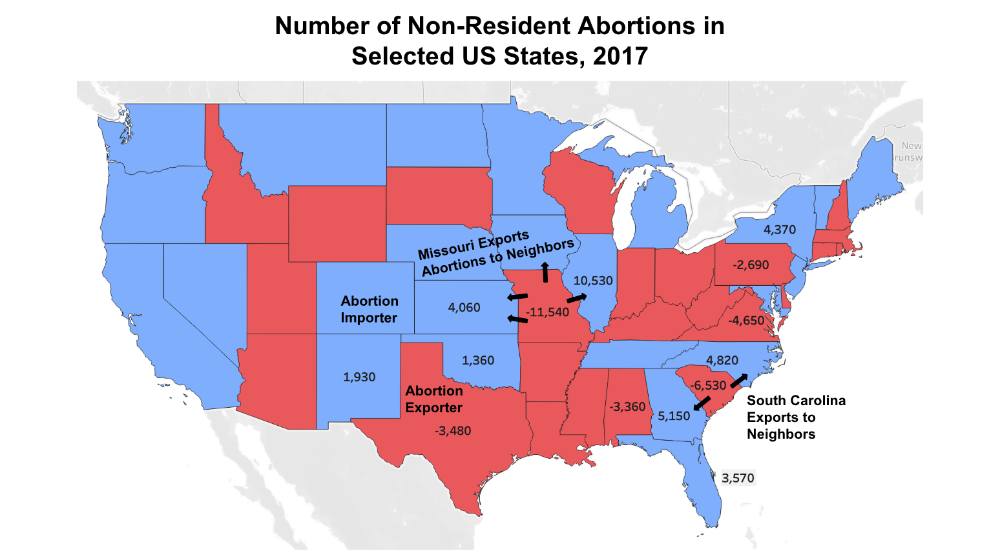
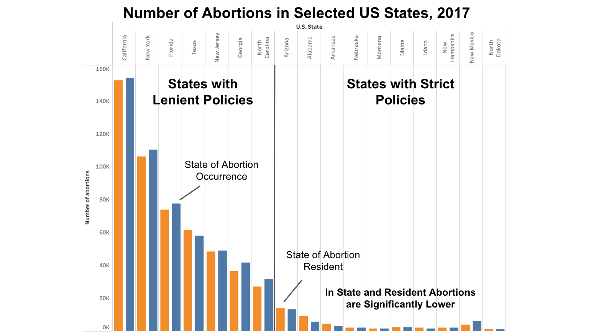

Exploratory Data Analysis Findings
I discovered a few data issues I would like to point out before proceeding with the analysis.
- I excluded Alaska and Hawaii to focus on mainland issues. I think if I use a map it will be cleaner, but also when we talk about political issues typically we focus on the continental US.
- Some of the percent change values are not interpretable because OK for example went from 2->3 clinics in 2017-2020 and this 100% increase is not significant
- Percent of county without abortion metrics will skew results significantly between large and small states or those where populations occur densely in certain counties
Proposition: Restrictions on abortions do not lower rates, they just export the abortions elsewhere
FOR the Proposition

Design Decisions and Rationale:
- Score: -1.5
- Georgraphically associate abortion imports and exports. Include arrows to indicate flow direction of abortions so it is feasible to see
- Instead of showing separate counts of resident abortions and occurences, only highlight the delta
- Strong color binary highlights importers and exporters. Usng a scale of 5 or so would have shown more nuance
- Color choices could have worked better, a bit saturated and hard to look at
- Not showing numbers on lower count states was intentional to drive focus towards biggest deltas
AGAINST the Proposition

Design Decisions and Rationale:
- Score: -1
- Pick states that are on the extremees of either end to highlight here
- Show aggregate counts instead of differences so bars are similar in size and deltas are hidden
- Choose less polarizing colors than above to protray a more neutral tone
Final Reflection
This assignment for me was very difficult. I switched topics a couple times, realizing the more hot the issue is, the easier the assignment would be. The differences in arguments about climate change were much harder to convey through chart graphic changes. I was surprised how even when I got to the abortion data, using the exact same data for two sides was a big challenge. I think it would be much easier to argue opposing sides when you slighlt change up the data. That was part of my decision to look at aggregate values versus the difference between these two in my two different visualizations. If I had to use only one of these two in both there was no way to make my visuals persuasive.
I also want to note I was specificially surprised with not being able to find a clear trump abortion policy narrative. Number of clinics opened or close over 2017-2020 was not easy to visualize. It is especially hard with the data being older, news articles about this time period are overshadowed by more current abortion turning points. Research skills can be incredibly useful when designing older less popular topic visuals.
Ethical analysis and visualization to me is defined by author communication. When data is left out or certain color schemes used that play on cognitive bias, we get more effective graphics. More effective graphics are wonderful! They draw readers in and make them reconsider their beliefs, I think more data representations should actually be like this. With this powerful idea comes the responsibility to communicate such decisions that were made. Without this communication, unethical visualization arises.
For me, there do still exist some clearly unacceptable persuasion choices. Setting a color scheme to be skewed away from 0, truncating the Y axis, and using improperly transformed or calculated data are all areas I put strict boundaries. Misleading is okay with explanations, but blatant misuse should never be done by data journalists. Miscalculations notably are just as bad as intentional misuse of data. Double checking visuals and calculations should be a core part of any visualizers work.